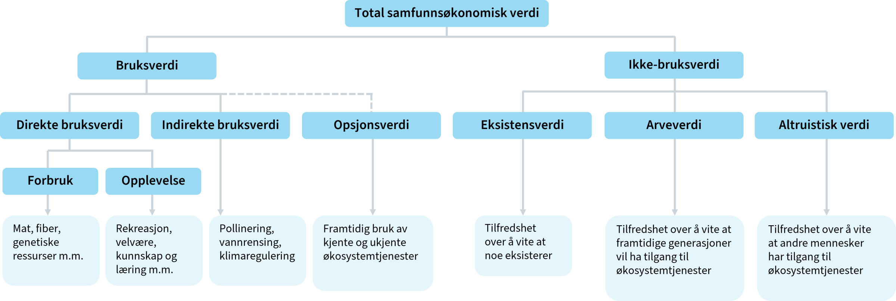

Forelesning 10 - Virkninger uten markedspris og usikkerhet
Forelesning 10 - Virkninger uten markedspris og usikkerhet
Avdekke preferanser:
Oversikt over ulike verdsettingsmetoder for prissetting:
| Tilnærming | Type verdi | Vanligste verdsettingsmetoder |
|---|---|---|
| Faktisk marked | Markedsbasert | Bruksverdi: Markedspriser, kostnader ved avbøtende tiltak, kostnader ved å erstatte tapte miljøgoder |
| Parallelle markeder | Avslørte preferanser | Bruksverdi: Hedonisk prising (eiendomspriser, lønninger), reisekostnadsmetoden |
| Hypotetiske markeder | Uttrykte preferanser | Bruksverdi og ikke-bruksverdi: Betinget verdsetting, valgeksperimenter |
Fordeler og ulemper
Markedsbasert
- Den foretrukkene metoden
- Markedspriser er ofte ikke tilgjengelig
Metoder basert på avslørte preferanser
- Forholdsvis pålitelig
- Begrenset bruksområde
- Mest egnet til bruksverdi
- Bør suppleres med uttryket preferanser
Metode for uttrkte preferanser
- Kan anvendes på alle typer goder
- Folk vil ofte ikke oppgi korrekte svar på hypotetiske valg
Bruk av fagksperter for å verdsette virkninger
- Bedre til å vurdere sannsynligheter
- Samme metoder for å avdekke preferanser kan brukes på eksperter
- Ekspertvurdering vil ikke alltid samsvare med publikums egne preferanser
- Ekspertvurderinger kan å også brukes til å designe scenarier for betinget verdsetting og valgeksperimenter
Miljøvirkninger

- Miljøverdi kan være vanskelig å verdsette, spesielt ikke-bruksverdi
- Ofte er urimelig å forutsette at befolkningen (respondenten) har erfaring med å ta valg som påvirker tilgangen til eller kvaliteten på disse godene.
- Verdioverføringer fra tidligere gjennomførte studier brukes ofte, men forutsetter at de underliggende verdsettingsstudiene er av høy kvalitet
Kostnadsbasert verdsettelse
- Beregne hva det vil koste å unntå eller avbøte tapet av et miljøgode
- F.eks. støyisolering
Usikkerhetsanalyse
Vurdering av usikkerhet kan grovt sett bestå av disse fire stegene:
- kartlegg usikkerhetsfaktorene
- klassifiser usikkerhetsfaktorene
- gjennomfør usikkerhetsanalyse
- vurder risikoreduserende tiltak
Husk at usikkerhet allerede er tatt høyde for til en viss grad
- Tiltak med høy risiko eller umoden teknologi kan ha blitt forkastet når relevante tiltak ble valg ut i arbeidsfase 2
- Forventningsverdien tar hensyn til ulike sannsynligheter for ulike utfall
- Kalkulasjonsrenten tar hensyn til risiko
Ulike typer av usikkerhet
- Tiltaks- og prosjektinterne forhold: Usikkerhet knyttet til gjennomføringen av prosjektet og til det man har betydelig kontroll over. Usikkerhet knyttet til selve prosjektet og organisasjonens gjennomføringsevne er sentralt. I et investeringsprosjekt kan det også være viktig å vurdere blant annet usikkerhet knyttet til teknikk, produksjonsplaner og kvaliteten på planmaterialet og prosjekteringen.
- Hendelsesusikkerhet: Dette er en gjennomgang av de hendelser som kan inntreffe, og som vil kunne påvirke virkningene til tiltaket eller prosjektet, inkludert den anslåtte sannsynligheten for at hendelsene inntreffer. Eksempler kan være at det opprettes et privat konkurrerende tilbud til en offentlig tjeneste, eller at et IT-system ikke lenger vil fungere.
- Generell usikkerhet: Dette er faktorer som er tiltaks- og prosjektinterne, og som kan påvirkes, men også alle grader av eksternt gitt usikkerhet og usikkerhet som ikke kan påvirkes.
Ulike typer usikkerhetsanalyse
følsomhetsanalyser | | Pessimistisk verdi | Forventet verdi | Optimistisk verdi | |—————————–|——————–|—————–|——————-| | Forventet investeringskostnad (mill. kr) | 300 | 125 | 50 | | Netto nåverdi (mill. kr) | -47 | 128 | 203 |
scenarioanalyser
- Utvidelse av følsomhetsanalyse
- Utvidelse av følsomhetsanalyse
simuleringer
- Monte Carlo
Risikoreduserende tiltak
- forebygge avvik fra forventningsverdien
- planlegge for å begrense konsekvensene av avvik eller uheldige hendelser
Realopsjoner
- Det er betydelige (irreversible) kostnader forbundet med å komme tilbake til utgangspunktet
- Det er sannsynlig at man senere får ny informasjon som gir god støtte i beslutningsprosessen.
- Det er handlingsrom når man på et senere tidspunkt skal ta en ny beslutning om tiltak.
Forskjellige typer realopsjoner
- Utsatt beslutning:
- Trinnvis utbygging:
- Innbygd fleksibilitet:
- Avslutning av tiltak: